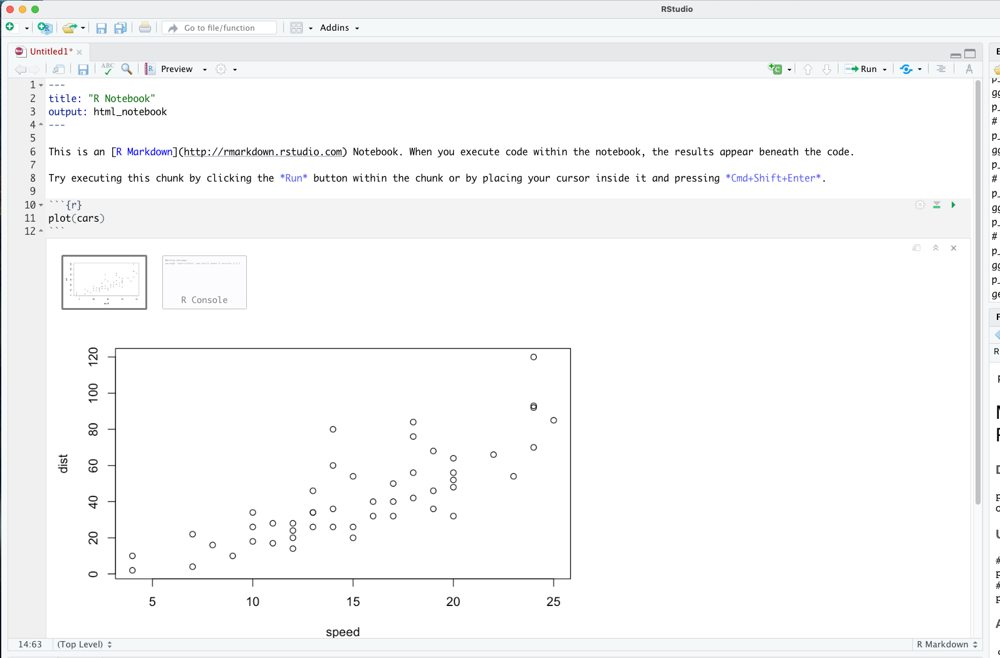
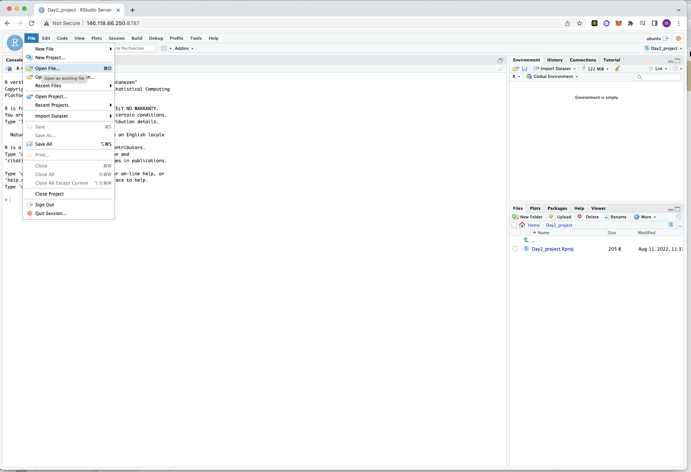

Setting up R/RStudio on Pawsey Nimbus
Questions
- How to get the full gene count-matrix for downstream analysis?
- How to open RStudio on the Pawsey training VM?
- How to import a count-matrix in R?
Objectives
- Introduction to RStudio
- Learn to start RStudio on Pawsey Nimbus
- Load the count matrix in R
R and RStudio
- R is a programming language for statistical computing and graphics.
- RStudio is an integrated development environment which can be used to write and excecute R-code.
Using R/RStudio IDE for DE analysis
- The gene-count matrix which was generated using the nefcore-rnaseq pipline can be used to perform statistical analyses and determine differentially expressed (DE) genes and pathways.
- Multiple independant packages/libraries have been developed in R-programming, which can be used for performing various kinds of ‘omics’ analysis.
- R packages such as DeSeq2, EdgeR etc are used for identification of differencially expressed (DE) genes. Today we will be using DeSeq2.
Run RStudio on the Nimbus trainee VM
This is a two step process
Step1: Run the rserver command (Pawsey Nimbus)
# Create a temporary rstudio-server folder on your instance:
mkdir -p /tmp/rstudio-server
PASSWORD='abc' singularity exec -B /tmp/rstudio-server:/var/lib/rstudio-server -B /tmp/rstudio-server:/var/run/rstudio-server -B ~/base_directory/working_directory:/home /cvmfs/containers.biocommons.aarnet.edu.au/r/n/rnaseq_rstudio.sif rserver --auth-none=0 --auth-pam-helper-path=pam-helper --server-user ubuntuOnce you paste the above command in the termonal window and press Enter, you SHOULD NOT see any output (the command prompt is stuck at the terminal, awaiting any further action!). If this happens, we are good to go..
You can also run the above command using a screen window.
Step2: Open RStudio from a browser (Local machine)
Open up a browser window (IMPORTANT: Firefox does not work. Use Chrome or Safari.)
Type
146.118.XX.XX:8787in your browser where the XX.XX will be replaced by your IP specific digits. So if my login IP is 146.118.67.219, I will type146.118.67.219 :8787in the browser (e.g.Chrome) and press enter.Enter the username, which is your image operating system, which is
ubuntu.Enter the password, which in this example is
abc.To end the session, simply exit from the browser.
To also end the session on your Pawsey Nimbus, run the following command:
lsof -ti:8787 | xargs kill -9Transfer files to correct path
Please transfer the files Full_count_matrix.txt andrnaseq_DE_Full_matrix.Rmd from the path ~/base_directory/working_directory/ to the path ~/base_directory/working_directory/rstudio/ by running the following two commands
cp ~/base_path/working_directory/Full_count_matrix.txt/ rstudio/
cp ~/base_path/working_directory/rnaseq_DE_Full_matrix.Rmd rstudio/We will discuss what these files contain in the sections below.
Working in RStudio
R-markdown
- R Markdown is a file format for making dynamic documents with R.
- An R Markdown document is written in markdown (an easy-to-write plain text format) and contains chunks of embedded R code, like the document shown below.

The correct gene-count matrix
In yesterday’s session, we had generated a gene-count matrix was generated using the nf-core/rnaseq pipeline. This file can be seen in the path:
~/base_directory/working_directory/results/star_salmon/salmon.merged.gene_counts.tsvThe input to the nf-core/rnaseq pipeline were sub-setted fastq files from the 6 samples and these were mapped to a specific region of chr18 of the mouse genome. This was done so that the excecution of the nf-core/rnaseq pipeline can be demonstrated on our small-sized training VMs (2 cpus and 8 GB RAM) in practical time (~ 20 mins).
However, for today’s session, we will be using a pre-computed gene-count matrix which was generated by aligning the full set of reads to the complete mouse genome (version mm10). This gene-count matrix file was downloaded previously along with the other files from cloudstor and is named as Full_count_matrix.txt.
Open the R-markdown file

The Rmarkdown file rnaseq_DE_Full_matrix.Rmd contains all R-scipts required for today’s analysis. Each individual chunk of code can be run separately by clicking on the arrow next to it top left corner.
*NOTE
Please use this .rmd file for excecuting the code (recommended), but make sure that you run the code chunks in a sequential order.
Alternatively you can make your own new markdown (.rmd) file and insert R-code chunks into it 😬
Load the R-libraries
- Import all the R libraries/packages which will assist us at various steps in the analysis.
suppressMessages({
library("DESeq2")
library("edgeR")
library("limma")
library("RColorBrewer")
library("gplots")
library("ggplot2")
library("factoextra")
library("devtools")
library("rstudioapi")
library("dplyr")
library("tibble")
library("tidyverse")
library("pheatmap")
library("biomaRt")
library("annotables")
library("org.Mm.eg.db")
library("biobroom")
library("clusterProfiler")
library("pathfindR")
})Set the current working directory
current_path <- getActiveDocumentContext()$path
setwd(dirname(current_path ))Import the gene-count matrix
The DESeq2 package expects count data from RNA-seq or another high-throughput sequencing experiment in the form of a matrix of integer values, as input. The rows in the matrix correspond to genes, and the columns correspond to samples. The values in the matrix should be un-normalized counts.
# Read the Full count matrix
counttable_original<-read.delim("FULL_count_matrix.txt", header=T, row.names=1)
# View the count matrix
#View(counttable_original)
# Gene symbol as the identifier (when compared to ENSG ID)
counttable<-counttable_original[,c("Symbol","WT1","WT2","WT3","KO1","KO2","KO3")]
row.names(counttable) <- NULL
# Convert Column'GeneSymbol' to rowname)
rownames(counttable) <- counttable$Symbol
counttable<-counttable[,c("WT1","WT2","WT3","KO1","KO2","KO3")]
#View(counttable)
Key points
- RStudio server can be run on the Nimbus VM instance. This allowes the user an end-to-end experience when analysing the RNA-seq data on the Pawsey resource.
All materials copyright Sydney Informatics Hub, University of Sydney